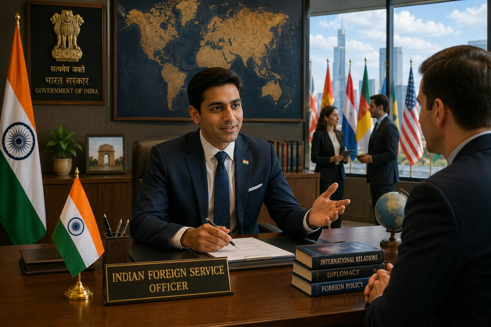

- IFS stands for Indian Foreign Service.
- "Foreign Service" mean working with other countries and representing India around the world.
- An IFS Officer represents India in different countries.
- They build good relationships with other countries and help Indians who were living or travelling abroad.
- 👉 In simple words: Indian Foreign Service Officers represent India in other countries and help maintain good relationships with them.
IFS Officer
👮 What Do They Do?

🎓 How to Become an Indian Foreign Service (IFS) Officer
STEP 1
Complete your Class 12 from a recognized board. You can choose Arts, Science, or Commerce.
STEP 2
Complete a bachelor's degree from a recognized university. (B.A., B.Sc., B.Com., B.Tech., or any other bachelor's degree)
STEP 4
Prepare for the Preliminary Examination (Prelims) and pass the exam.
STEP 5
Prepare for the Main Examination (Mains) and pass the exam.
STEP 6
Attend the Personality Test (Interview) conducted by UPSC.
STEP 7
If selected, complete the Indian Foreign Service training provided by the Government of India and become an Indian Foreign Service (IFS) Officer.
Note: There is no separate degree for becoming an Indian Foreign Service (IFS) Officer. After completing any bachelor's degree, you can apply for the UPSC Civil Services Examination.
STEP 1
Imagine you are working as an Indian Foreign Service (IFS) Officer in an Indian Embassy.
STEP 2
You meet people from other countries and represent India during official meetings.
STEP 3
You discuss topics like trade, education, tourism, and cultural exchange between India and other countries.
STEP 4
You help Indian citizens who were living or travelling abroad.
STEP 5
You work to build good relationships between India and other countries.
STEP 6
If you enjoy representing India, meeting people from different countries, and building international relationships, this career may suit you.
(Click Yes or No for each question)
1. Have you ever heard about the Indian Foreign Service (IFS)?
2. Do you know what an Indian Embassy does?
3. Are you interested in learning how India builds good relationships with other countries?
4. Would you like to do a job where you represent India in other countries?
5. Imagine you are an Indian Foreign Service (IFS) Officer. Your job is to represent India in other countries, meet people from around the world, and help build good relationships between India and other countries. Does this excite you?